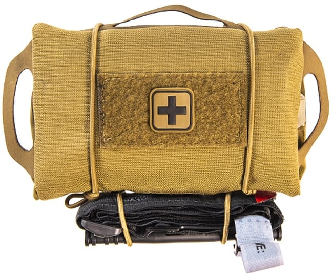
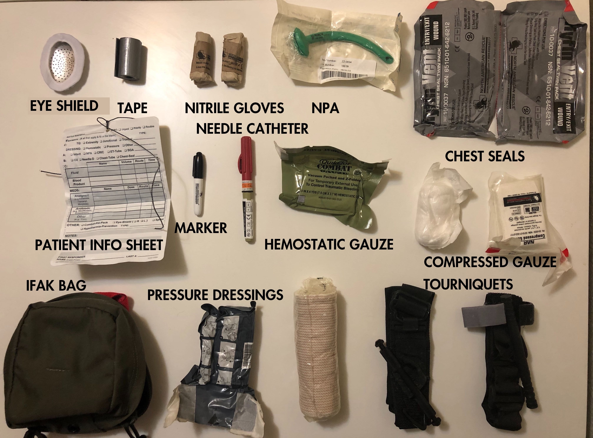

This educational guide is produced by the Education and Instruction Committee of the Socialist Rifle Association.
An IFAK is an Individual First Aid Kit. It's set up to treat life and limb threatening wounds for one person, you. An IFAK serves a limited but vital role, and is not intended to replace a regular first aid kit, trauma kit, or other medical equipment.
The IFAK is originally a US Marine Corps issued kit for treating battlefield injuries until medevac is available, but has since become part of many shooters' range bag and other gear
Anyone engaged in shooting sports is exposed to a higher risk of severe injury than the general population. The chances of an accident during a range day are small, but not negligible. Many shooting ranges are outdoors and/or in remote locations, meaning that EMS will take longer than usual to arrive. It is possible to bleed out from a severe hemorrhage in just a few minutes without the proper intervention. With this in mind, being able to treat life-threatening injuries could be the difference between a bad day and a tragedy

An IFAK is not intended to be a comprehensive first aid kit; it is intended to contain the essentials for treating severe trauma without extra pieces causing clutter. As such, all IFAKs should contain:
Optional:
*Do not use these without proper training. Improper use of these items may result in additional harm

If you're confused or intimidated by the equipment presented, or the idea of treating a severe injury, you're not alone! Fortunately, you are also in good company. Your local SRA chapter may be able to teach you how to use an IFAK as part of a Stop the Bleed class.
Some SRA chapters also offer first aid, CPR, and other educational classes to better prepare you to respond in the event of an emergency.
More information about the equipment presented, along with suggested/approved brands can be found at: deployedmedicine.com
Once you've taken a Stop the Bleed class, you can continue expanding yours skills by learning CPR, first aid, wilderness first responder, or Tactical Emergency Casualty Care. Your local SRA chapter can help get you in touch will all of those resources.
The Socialist Rifle Association's mission is to uphold the right of the working class to keep and bear arms and maintain the skills necessary for self and community defense.
You can learn more and join us at:
The information contained in this guide does not, and is not intended to constitute legal or medical advice; instead, all information and content contained in this guide are for general informational purposes only. Information contained in this guide may not constitute the most up-to-date legal or medical information.
You should contact your attorney to obtain advice with respect to any particular legal matter. No user of this guide should act or refrain from acting on the basis of information confined in this guide without first seeking legal advice from counsel in the relevant jurisdiction. Only your individual attorney can provide assurances that the information contained herein --- and your interpretation of it --- is applicable or appropriate to your particular situation.
The views expressed through this guide are those of the individual authors writing in their individual capacities only --- not those of the Education and Instruction Committee of the Socialist Rifle Association or the Socialist Rifle Association as a whole. All liability with respect to actions taken or not taken based on the contents of this guide are hereby expressly disclaimed. The content in this guide is provided "as is;" no representations are made that the content is error-free.
We shall not be liable for any loss or damage of whatever nature whether arising in contract, tort or otherwise, which may arise as a result of your use of this guide or from your use of information contained therein.
Last Revised: 4/17/20